前言 一、spring框架概述 二、Ioc容器 三、AOP 四、jdbcTemplate 五、事务管理 六、spring新特性 一、spring框架概述 1.spring是轻量级的开源的javaEE框架
2.spring可以解决企业应用开发的复杂性。
3.spring有两个核心：==ioc==和==aop==
ioc:控制反转，把创建对象过程交给spring管理。
aop:面向切面，不修改源码对功能进行增强。
4.spring特点
方便解耦，简化开发
aop编程支持
方便程序测试
方便和其它框架整合
方便事务操作
降低API开发难度
1.Spring5 入门案例 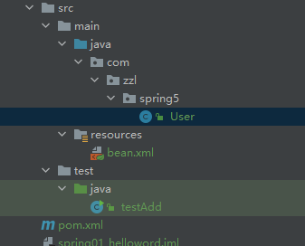
（1）新建maven项目
（2）导入依赖
1 2 3 4 5 <dependency > <groupId > org.springframework</groupId > <artifactId > spring-webmvc</artifactId > <version > 5.2.5.RELEASE</version > </dependency >
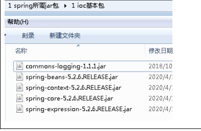
（3）创建普通类，在这个类创建普通方法
1 2 3 4 5 public class User { public void add () { System.out.println("add..." ); } }
（4）创建 Spring 配置文件，在配置文件配置创建的对象
1 2 3 4 5 6 7 8 9 <?xml version="1.0" encoding="UTF-8" ?> <beans xmlns ="http://www.springframework.org/schema/beans" xmlns:xsi ="http://www.w3.org/2001/XMLSchema-instance" xsi:schemaLocation ="http://www.springframework.org/schema/beans http://www.springframework.org/schema/beans/spring-beans.xsd" > <bean id ="user" class ="com.atguigu.spring5.User" > </bean > </beans >
（5）进行测试代码编写
1 2 3 4 5 6 7 8 9 public class testAdd { public static void main (String[] args) { ApplicationContext context=new ClassPathXmlApplicationContext ("bean.xml" ); User user=context.getBean("add" ,User.class); user.add(); } }
二、Ioc容器 IOC（概念和原理）
1、什么是 IOC
控制反转，把对象创建和对象之间的调用过程，交给 Spring 进行管理
使用 IOC 目的：为了耦合度降低
做入门案例就是 IOC 实现
2、IOC 底层原理
3、画图讲解 IOC 底层原理
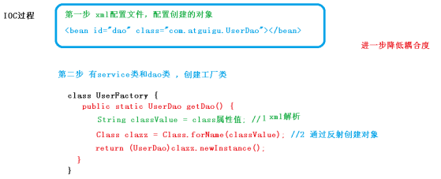
IOC（BeanFactory 接口）
1、IOC 思想基于 IOC 容器完成，IOC 容器底层就是对象工厂
2、Spring 提供 IOC 容器实现两种方式：（两个接口）
（1）BeanFactory：IOC 容器基本实现，是 Spring 内部的使用接口，不提供开发人员进行使用
加载配置文件时候不会创建对象，在获取对象（使用）才去创建对象
（2）ApplicationContext：BeanFactory 接口的子接口，提供更多更强大的功能，一般由开发人 员进行使用
加载配置文件时候就会把在配置文件对象进行创建
3、ApplicationContext 接口有实现类
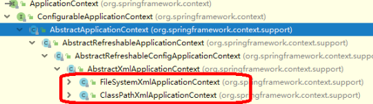
IOC 操作 Bean 管理（概念） 1、什么是 Bean 管理
（0）Bean 管理指的是两个操作
（1）Spring 创建对象
（2）Spirng 注入属性
2、Bean 管理操作有两种方式
（1）基于 xml 配置文件方式实现
（2）基于注解方式实现
IOC 操作 Bean 管理（基于 xml 方式） 1、基于 xml 方式==创建对象==
（1）在 spring 配置文件中，使用 bean 标签，标签里面添加对应属性，就可以实现对象创建
（2）在 bean 标签有很多属性，介绍常用的属性
id 属性：唯一标识 class 属性：类全路径（包类路径）
（3）创建对象时候，默认也是执行无参数构造方法完成对象创建
2、基于 xml 方式==注入属性== （1）DI：依赖注入，就是注入属性
3、第一种注入方式：使用 set 方法进行注入
（1）创建类，定义属性和对应的 set 方法
1 2 3 4 5 6 7 8 9 10 11 12 13 14 15 public class Book { private String bname; private String bauthor; public void setBname (String bname) { this .bname = bname; } public void setBauthor (String bauthor) { this .bauthor = bauthor; } }
（2）在 spring 配置文件配置对象创建，配置属性注入
1 2 3 4 5 6 7 8 9 <bean id ="book" class ="com.atguigu.spring5.Book" > <property name ="bname" value ="易筋经" > </property > <property name ="bauthor" value ="达摩老祖" > </property > </bean >
4、第二种注入方式：使用有参数构造进行注入
（1）创建类，定义属性，创建属性对应有参数构造方法
1 2 3 4 5 6 7 8 9 10 11 12 13 public class Orders { private String oname; private String address; public Orders (String oname,String address) { this .oname = oname; this .address = address; } }
（2）在 spring 配置文件中进行配置
1 2 3 4 5 <bean id ="orders" class ="com.atguigu.spring5.Orders" > <constructor-arg name ="oname" value ="电脑" > </constructor-arg > <constructor-arg name ="address" value ="China" > </constructor-arg > </bean >
5、p 名称空间注入（了解）
（1）使用 p 名称空间注入，可以简化基于 xml 配置方式 第一步 添加 p 名称空间在配置文件中
第一步 添加 p 名称空间在配置文件中
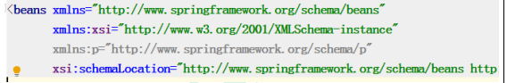
第二步 进行属性注入，在 bean 标签里面进行操作
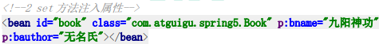
IOC 操作 Bean 管理（xml 注入其他类型属性） 1、字面量
（1）null 值
1 2 3 4 <property name ="address" > <null /> </property >
（2）属性值包含特殊符号
1 2 3 4 5 6 7 <property name ="address" > <value > <![CDATA[<<南京>>]]></value > </property >
2、注入属性-外部 bean
（1）创建两个类 service 类和 dao 类
（2）在 service 调用 dao 里面的方法
（3）在 spring 配置文件中进行配置
1 2 3 4 5 6 7 8 9 10 11 public class UserService { private UserDao userDao; public void setUserDao (UserDao userDao) { this .userDao = userDao; } public void add () { System.out.println("service add..............." ); userDao.update(); } }
1 2 3 4 5 6 7 8 9 <bean id ="userService" class ="com.atguigu.spring5.service.UserService" > <property name ="userDao" ref ="userDaoImpl" > </property > </bean > <bean id ="userDaoImpl" class ="com.atguigu.spring5.dao.UserDaoImpl" > </bean >
3、注入属性-内部 bean
（1）一对多关系：部门和员工 一个部门有多个员工，一个员工属于一个部门 部门是一，员工是多
（2）在实体类之间表示一对多关系，员工表示所属部门，使用对象类型属性进行表示
1 2 3 4 5 6 7 public class Dept { private String dname; public void setDname (String dname) { this .dname = dname; } }
1 2 3 4 5 6 7 8 9 10 11 12 13 14 15 16 public class Emp { private String ename; private String gender; private Dept dept; public void setDept (Dept dept) { this .dept = dept; } public void setEname (String ename) { this .ename = ename; } public void setGender (String gender) { this .gender = gender; } }
（3）在 spring 配置文件中进行配置
1 2 3 4 5 6 7 8 9 10 11 12 13 <bean id ="emp" class ="com.atguigu.spring5.bean.Emp" > <property name ="ename" value ="lucy" > </property > <property name ="gender" value ="女" > </property > <property name ="dept" > <bean id ="dept" class ="com.atguigu.spring5.bean.Dept" > <property name ="dname" value ="安保部" > </property > </bean > </property > </bean >
4、注入属性-级联赋值
（1）第一种写法
1 2 3 4 5 6 7 8 9 10 11 <bean id ="emp" class ="com.atguigu.spring5.bean.Emp" > <property name ="ename" value ="lucy" > </property > <property name ="gender" value ="女" > </property > <property name ="dept" ref ="dept" > </property > </bean > <bean id ="dept" class ="com.atguigu.spring5.bean.Dept" > <property name ="dname" value ="财务部" > </property > </bean >
（2）第二种写法
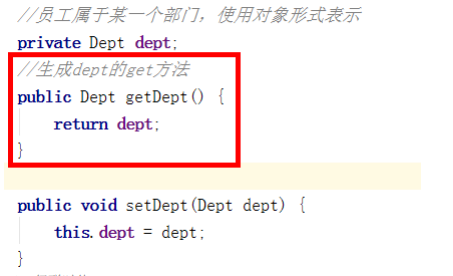
1 2 3 4 5 6 7 8 9 10 11 12 <bean id ="emp" class ="com.atguigu.spring5.bean.Emp" > <property name ="ename" value ="lucy" > </property > <property name ="gender" value ="女" > </property > <property name ="dept" ref ="dept" > </property > <property name ="dept.dname" value ="技术部" > </property > </bean > <bean id ="dept" class ="com.atguigu.spring5.bean.Dept" > <property name ="dname" value ="财务部" > </property > </bean >
IOC 操作 Bean 管理（xml 注入集合属性） 1、注入数组类型属性
2、注入 List 集合类型属性
3、注入 Map 集合类型属性
（1）创建类，定义数组、list、map、set 类型属性，生成对应 set 方法
1 2 3 4 5 6 7 8 9 10 11 12 13 14 15 16 17 18 19 20 21 22 public class Stu { private String[] courses; private List<String> list; private Map<String,String> maps; private Set<String> sets; public void setSets (Set<String> sets) { this .sets = sets; } public void setCourses (String[] courses) { this .courses = courses; } public void setList (List<String> list) { this .list = list; } public void setMaps (Map<String, String> maps) { this .maps = maps; } }
（2）在 spring 配置文件进行配置
1 2 3 4 5 6 7 8 9 10 11 12 13 14 15 16 17 18 19 20 21 22 23 24 25 26 27 28 29 30 31 <bean id ="stu" class ="com.atguigu.spring5.collectiontype.Stu" > <property name ="courses" > <array > <value > java 课程</value > <value > 数据库课程</value > </array > </property > <property name ="list" > <list > <value > 张三</value > <value > 小三</value > </list > </property > <property name ="maps" > <map > <entry key ="JAVA" value ="java" > </entry > <entry key ="PHP" value ="php" > </entry > </map > </property > <property name ="sets" > <set > <value > MySQL</value > <value > Redis</value > </set > </property > </bean >
4、在集合里面设置对象类型值
1 2 3 4 5 6 7 8 9 10 11 12 13 14 15 <bean id ="course1" class ="com.atguigu.spring5.collectiontype.Course" > <property name ="cname" value ="Spring5 框架" > </property > </bean > <bean id ="course2" class ="com.atguigu.spring5.collectiontype.Course" > <property name ="cname" value ="MyBatis 框架" > </property > </bean > <property name ="courseList" > <list > <ref bean ="course1" > </ref > <ref bean ="course2" > </ref > </list > </property >
5、把集合注入部分提取出来
（1）在 spring 配置文件中引入名称空间 util
1 2 3 4 5 6 7 8 9 10 11 12 13 14 15 16 17 18 19 20 <?xml version="1.0" encoding="UTF-8" ?> <beans xmlns ="http://www.springframework.org/schema/beans" xmlns:xsi ="http://www.w3.org/2001/XMLSchema-instance" xmlns:p ="http://www.springframework.org/schema/p" xmlns:util ="http://www.springframework.org/schema/util" xsi:schemaLocation ="http://www.springframework.org/schema/beans http://www.springframework.org/schema/beans/spring-beans.xsd http://www.springframework.org/schema/util http://www.springframework.org/schema/util/spring-util.xsd" > （2）使用 util 标签完成 list 集合注入提取 <util:list id ="bookList" > <value > 易筋经</value > <value > 九阴真经</value > <value > 九阳神功</value > </util:list > <bean id ="book" class ="com.atguigu.spring5.collectiontype.Book" > <property name ="list" ref ="bookList" > </property > </bean >
IOC 操作 Bean 管理(FactoryBean) 1、Spring 有两种类型 bean，一种普通 bean，另外一种工厂 bean（FactoryBean）
2、普通 bean：在配置文件中定义 bean 类型就是返回类型
3、工厂 bean：在配置文件定义 bean 类型可以和返回类型不一样
第一步 创建类，让这个类作为工厂 bean，实现接口 FactoryBean
第二步 实现接口里面的方法，在实现的方法中定义返回的 bean 类型
1 2 3 4 5 6 7 8 9 10 11 12 13 14 15 16 17 18 public class MyBean implements FactoryBean <Course> { @Override public Course getObject () throws Exception { Course course = new Course (); course.setCname("abc" ); return course; } @Override public Class<?> getObjectType() { return null ; } @Override public boolean isSingleton () { return false ; } }
1 2 <bean id ="myBean" class ="com.atguigu.spring5.factorybean.MyBean" > </bean >
1 2 3 4 5 6 7 8 @Test public void test3 () { ApplicationContext context = new ClassPathXmlApplicationContext ("bean3.xml" ); Course course = context.getBean("myBean" , Course.class); System.out.println(course); }
IOC 操作 Bean 管理（bean 作用域） 1、在 Spring 里面，设置创建 bean 实例是单实例还是多实例
2、在 Spring 里面，默认情况下，bean 是单实例对象
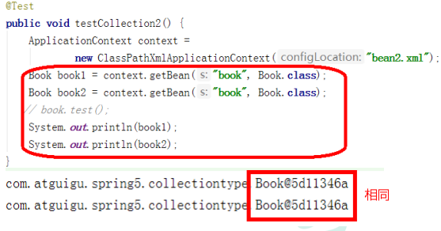
3、如何设置单实例还是多实例
（1）在 spring 配置文件 bean 标签里面有属性（scope）用于设置单实例还是多实例
（2）scope 属性值
第一个值 默认值，singleton，表示是单实例对象
第二个值 prototype，表示是多实例对象
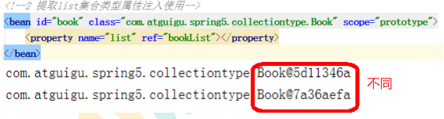
（3）singleton 和 prototype 区别
第一 singleton 单实例，prototype 多实例
第二 设置 scope 值是 singleton 时候，加载 spring 配置文件时候就会创建单实例对象 。
设置 scope 值是 prototype 时候，不是在加载 spring 配置文件时候创建 对象，在调用 getBean 方法时候创建多实例对象。
IOC 操作 Bean 管理（bean 生命周期） 1、生命周期
（1）从对象创建到对象销毁的过程
2、bean 生命周期
（1）通过构造器创建 bean 实例（无参数构造）
（2）为 bean 的属性设置值和对其他 bean 引用（调用 set 方法）
（3）调用 bean 的初始化的方法（需要进行配置初始化的方法）
（4）bean 可以使用了（对象获取到了）
（5）当容器关闭时候，调用 bean 的销毁的方法（需要进行配置销毁的方法）
3、演示 bean 生命周期
1 2 3 4 5 6 7 8 9 10 11 12 13 14 15 16 17 18 19 public class Orders { public Orders () { System.out.println("第一步 执行无参数构造创建 bean 实例" ); } private String oname; public void setOname (String oname) { this .oname = oname; System.out.println("第二步 调用 set 方法设置属性值" ); } public void initMethod () { System.out.println("第三步 执行初始化的方法" ); } public void destroyMethod () { System.out.println("第五步 执行销毁的方法" ); } }
1 2 3 <bean id ="orders" class ="com.atguigu.spring5.bean.Orders" initmethod ="initMethod" destroy-method ="destroyMethod" > <property name ="oname" value ="手机" > </property > </bean >
1 2 3 4 5 6 7 8 9 10 11 12 13 @Test public void testBean3 () { ClassPathXmlApplicationContext context = new ClassPathXmlApplicationContext ("bean4.xml" ); Orders orders = context.getBean("orders" , Orders.class); System.out.println("第四步 获取创建 bean 实例对象" ); System.out.println(orders); context.close(); }
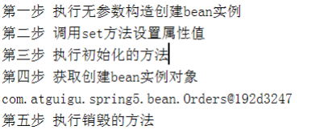
4、bean 的后置处理器，bean 生命周期有七步
（1）通过构造器创建 bean 实例（无参数构造）
（2）为 bean 的属性设置值和对其他 bean 引用（调用 set 方法）
（3）把 bean 实例传递 bean 后置处理器的方法 postProcessBeforeInitialization
（4）调用 bean 的初始化的方法（需要进行配置初始化的方法）
（5）把 bean 实例传递 bean 后置处理器的方法 postProcessAfterInitialization
（6）bean 可以使用了（对象获取到了）
（7）当容器关闭时候，调用 bean 的销毁的方法（需要进行配置销毁的方法）
5、演示添加后置处理器效果
（1）创建类，实现接口 BeanPostProcessor，创建后置处理器
1 2 3 4 5 6 7 8 9 10 11 12 13 14 public class MyBeanPost implements BeanPostProcessor { @Override public Object postProcessBeforeInitialization (Object bean, String beanName) throws BeansException { System.out.println("在初始化之前执行的方法" ); return bean; } @Override public Object postProcessAfterInitialization (Object bean, String beanName) throws BeansException { System.out.println("在初始化之后执行的方法" ); return bean; } }
1 2 <bean id ="myBeanPost" class ="com.atguigu.spring5.bean.MyBeanPost" > </bean >
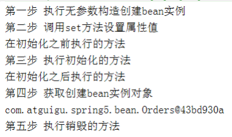
IOC 操作 Bean 管理（xml 自动装配） 1、什么是自动装配
（1）根据指定装配规则（属性名称或者属性类型），Spring 自动将匹配的属性值进行注入
2、演示自动装配过程
（1）根据属性名称自动注入
1 2 3 4 5 6 7 8 9 10 11 <bean id ="emp" class ="com.atguigu.spring5.autowire.Emp" autowire ="byName" > </bean > <bean id ="dept" class ="com.atguigu.spring5.autowire.Dept" > </bean >
（2）根据属性类型自动注入
1 2 3 4 5 6 7 8 9 10 <bean id ="emp" class ="com.atguigu.spring5.autowire.Emp" autowire ="byType" > </bean > <bean id ="dept" class ="com.atguigu.spring5.autowire.Dept" > </bean >
IOC 操作 Bean 管理(外部属性文件) 1、直接配置数据库信息
（1）配置德鲁伊连接池
（2）pom.xml引入德鲁伊连接池依赖
1 2 3 4 5 6 <dependency > <groupId > com.alibaba</groupId > <artifactId > druid</artifactId > <version > 1.1.22</version > </dependency >
1 2 3 4 5 6 7 8 9 <bean id ="dataSource" class ="com.alibaba.druid.pool.DruidDataSource" > <property name ="driverClassName" value ="com.mysql.jdbc.Driver" > </property > <property name ="url" value ="jdbc:mysql://localhost:3306/userDb" > </property > <property name ="username" value ="root" > </property > <property name ="password" value ="root" > </property > </bean >
2、引入外部属性文件配置数据库连接池
（1）创建外部属性文件，properties 格式文件，写数据库信息
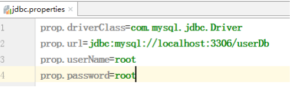
（2）把外部 properties 属性文件引入到 spring 配置文件中 * 引入 context 名称空间
1 2 3 4 5 6 7 8 9 10 11 12 13 14 15 16 17 18 19 20 21 22 <beans xmlns ="http://www.springframework.org/schema/beans" xmlns:xsi ="http://www.w3.org/2001/XMLSchema-instance" xmlns:p ="http://www.springframework.org/schema/p" xmlns:util ="http://www.springframework.org/schema/util" xmlns:context ="http://www.springframework.org/schema/context" xsi:schemaLocation ="http://www.springframework.org/schema/beans http://www.springframework.org/schema/beans/spring-beans.xsd http://www.springframework.org/schema/util http://www.springframework.org/schema/util/spring-util.xsd http://www.springframework.org/schema/context http://www.springframework.org/schema/context/spring-context.xsd" > <context:property-placeholder location ="classpath:jdbc.properties" /> <bean id ="dataSource" class ="com.alibaba.druid.pool.DruidDataSource" > <property name ="driverClassName" value ="${prop.driverClass}" > </property > <property name ="url" value ="${prop.url}" > </property > <property name ="username" value ="${prop.userName}" > </property > <property name ="password" value ="${prop.password}" > </property > </bean >
IOC 操作 Bean 管理(基于注解方式) 1、什么是注解
（1）注解是代码特殊标记，格式：@注解名称(属性名称=属性值, 属性名称=属性值..)
（2）使用注解，注解作用在类上面，方法上面，属性上面
（3）使用注解目的：简化 xml 配置
2、Spring 针对 Bean 管理中创建对象提供注解
（1）@Component
（2）@Service
（3）@Controller
（4）@Repository
上面四个注解功能是一样的，都可以用来创建 bean 实例
3、基于注解方式实现对象创建
第一步 引入依赖
第二步 开启组件扫描
1 2 3 4 5 <context:component-scan base-package ="com.atguigu" > </context:component-scan >
第三步 创建类，在类上面添加创建对象注解
1 2 3 4 5 6 7 8 9 @Component(value = "userService") public class UserService { public void add () { System.out.println("service add......." ); } }
4、开启组件扫描细节配置
1 2 3 4 5 6 7 8 9 10 11 12 13 14 15 16 17 <context:component-scan base-package ="com.atguigu" use-defaultfilters ="false" > <context:include-filter type ="annotation" expression ="org.springframework.stereotype.Controller" /> </context:component-scan > <context:component-scan base-package ="com.atguigu" > <context:exclude-filter type ="annotation" expression ="org.springframework.stereotype.Controller" /> </context:component-scan >
5、基于注解方式实现属性注入
（1）@Autowired：根据属性类型进行自动装配
第一步 把 service 和 dao 对象创建，在 service 和 dao 类添加创建对象注解
第二步 在 service 注入 dao 对象，在 service 类添加 dao 类型属性，在属性上面使用注解
1 2 3 4 5 6 7 8 9 10 11 12 13 @Service public class UserService { @Autowired private UserDao userDao; public void add () { System.out.println("service add......." ); userDao.add(); } }
（2）@Qualifier：根据名称进行注入
这个@Qualifier 注解的使用，和上面@Autowired 一起使用
1 2 3 4 5 6 @Autowired @Qualifier(value = "userDaoImpl1") private UserDao userDao;
（3）@Resource：可以根据类型注入，可以根据名称注入
1 2 3 @Resource(name = "userDaoImpl1") private UserDao userDao;
（4）@Value：注入普通类型属性
1 2 @Value(value = "abc") private String name;
==6、完全注解开发== （1）创建配置类，替代 xml 配置文件
1 2 3 4 @Configuration @ComponentScan(basePackages = {"com.atguigu"}) public class SpringConfig {}
（2）编写测试类
1 2 3 4 5 6 7 8 9 10 11 @Test public void testService2 () { ApplicationContext context = new AnnotationConfigApplicationContext (SpringConfig.class); UserService userService = context.getBean("userService" , UserService.class); System.out.println(userService); userService.add(); }
三、AOP AOP（概念） 1、什么是 AOP
（1）面向切面编程（方面），利用 AOP 可以对业务逻辑的各个部分进行隔离，从而使得 业务逻辑各部分之间的
耦合度降低，提高程序的可重用性，同时提高了开发的效率。
（2）通俗描述：不通过修改源代码方式，在主干功能里面添加新功能
（3）使用登录例子说明 AOP
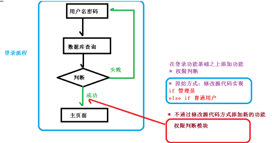
AOP（底层原理） 1、AOP 底层使用动态代理
（1）有两种情况动态代理
第一种 有接口情况，使用 JDK 动态代理
创建接口实现类代理对象，增强类的方法
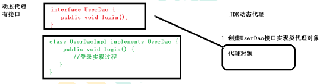
第二种 没有接口情况，使用 CGLIB 动态代理
创建子类的代理对象，增强类的方法
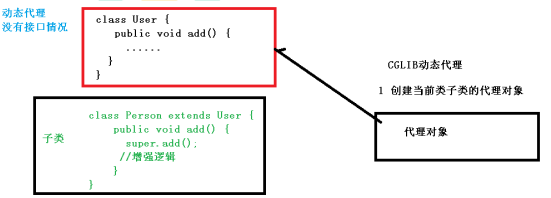
AOP（JDK 动态代理） 1、使用 JDK 动态代理，使用 Proxy 类里面的方法创建代理对象
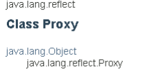
（1）调用 newProxyInstance 方法
方法有三个参数：
第一参数，类加载器
第二参数，增强方法所在的类，这个类实现的接口，支持多个接口
第三参数，实现这个接口 InvocationHandler，创建代理对象，写增强的部分
2、编写 JDK 动态代理代码
（1）创建接口，定义方法
1 2 3 4 public interface UserDao { public int add (int a,int b) ; public String update (String id) ; }
（2）创建接口实现类，实现方法
1 2 3 4 5 6 7 8 9 10 11 public class UserDaoImpl implements UserDao { @Override public int add (int a, int b) { return a+b; } @Override public String update (String id) { return id; } }
（3）使用 Proxy 类创建接口代理对象
1 2 3 4 5 6 7 8 9 10 11 12 13 14 15 16 17 18 19 public class JDKProxy { public static void main (String[] args) { Class[] interfaces = {UserDao.class}; new InvocationHandler () { throws Throwable { UserDaoImpl userDao = new UserDaoImpl (); UserDao dao = (UserDao)Proxy.newProxyInstance(JDKProxy.class.getClassLoader(), interfaces,new UserDaoProxy (userDao)); int result = dao.add(1 , 2 ); System.out.println("result:" +result); } }
1 2 3 4 5 6 7 8 9 10 11 12 13 14 15 16 17 18 19 20 21 22 class UserDaoProxy implements InvocationHandler { private Object obj; public UserDaoProxy (Object obj) { this .obj = obj; } @Override public Object invoke (Object proxy, Method method, Object[] args) throws Throwable { System.out.println("方法之前执行...." +method.getName()+" :传递的参 数..." + Arrays.toString(args)); Object res = method.invoke(obj, args); System.out.println("方法之后执行...." +obj); return res; } }
AOP（术语） 1、连接点
2、切入点
3、通知（增强）
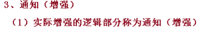
4、切面
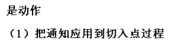
AOP 操作（准备工作） 1、Spring 框架一般都是基于 AspectJ 实现 AOP 操作
（1）AspectJ 不是 Spring 组成部分，独立 AOP 框架，一般把 AspectJ 和 Spirng 框架一起使 用，进行 AOP 操作
2、基于 AspectJ 实现 AOP 操作
（1）基于 xml 配置文件实现
（2）基于注解方式实现（使用）
3、在项目工程里面引入 AOP 相关依赖
4、切入点表达式
（1）切入点表达式作用：知道对哪个类里面的哪个方法进行增强
（2）语法结构： execution([权限修饰符] [返回类型] [类全路径] [方法名称] ([参数列表]))
举例 1：对 com.atguigu.dao.BookDao 类里面的 add 进行增强 execution(* com.atguigu.dao.BookDao.add(..))
举例 2：对 com.atguigu.dao.BookDao 类里面的所有的方法进行增强 execution(* com.atguigu.dao.BookDao.* (..))
举例 3：对 com.atguigu.dao 包里面所有类，类里面所有方法进行增强 execution(* com.atguigu.dao.. (..))
AOP 操作（AspectJ 注解） 1、创建类，在类里面定义方法
1 2 3 4 5 public class User { public void add () { System.out.println("add......." ); } }
2、创建增强类（编写增强逻辑）
（1）在增强类里面，创建方法，让不同方法代表不同通知类型
1 2 3 4 5 6 public class UserProxy { public void before () { System.out.println("before......" ); } }
3、进行通知的配置
（1）在 spring 配置文件中，开启注解扫描
1 2 3 4 5 6 7 8 9 10 11 12 13 <?xml version="1.0" encoding="UTF-8" ?> <beans xmlns ="http://www.springframework.org/schema/beans" xmlns:xsi ="http://www.w3.org/2001/XMLSchema-instance" xmlns:context ="http://www.springframework.org/schema/context" xmlns:aop ="http://www.springframework.org/schema/aop" xsi:schemaLocation ="http://www.springframework.org/schema/beans http://www.springframework.org/schema/beans/spring-beans.xsd http://www.springframework.org/schema/context http://www.springframework.org/schema/context/spring-context.xsd http://www.springframework.org/schema/aop http://www.springframework.org/schema/aop/spring-aop.xsd" > <context:component-scan basepackage ="com.atguigu.spring5.aopanno" > </context:component-scan >
（2）使用注解创建 User 和 UserProxy 对象
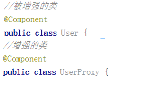
（3）在增强类上面添加注解 @Aspect
1 2 3 4 5 @Component @Aspect public class UserProxy {}
（4）在 spring 配置文件中开启生成代理对象
1 2 <aop:aspectj-autoproxy > </aop:aspectj-autoproxy >
4、配置不同类型的通知
（1）在增强类的里面，在作为通知方法上面添加通知类型注解，使用切入点表达式配置
1 2 3 4 5 6 7 8 9 10 11 12 13 14 15 16 17 18 19 20 21 22 23 24 25 26 27 28 29 30 31 32 33 34 35 36 37 @Component @Aspect public class UserProxy { @Before(value = "execution(* com.atguigu.spring5.aopanno.User.add(..))") public void before () { System.out.println("before........." ); } @AfterReturning(value = "execution(* com.atguigu.spring5.aopanno.User.add(..))") public void afterReturning () { System.out.println("afterReturning........." ); } @After(value = "execution(* com.atguigu.spring5.aopanno.User.add(..))") public void after () { System.out.println("after........." ); } @AfterThrowing(value = "execution(* com.atguigu.spring5.aopanno.User.add(..))") public void afterThrowing () { System.out.println("afterThrowing........." ); } @Around(value = "execution(* com.atguigu.spring5.aopanno.User.add(..))") public void around (ProceedingJoinPoint proceedingJoinPoint) throws Throwable { System.out.println("环绕之前........." ); proceedingJoinPoint.proceed(); System.out.println("环绕之后........." ); } }
5、相同的切入点抽取
1 2 3 4 5 6 7 8 9 10 @Pointcut(value = "execution(* com.atguigu.spring5.aopanno.User.add(..))") public void pointdemo () {} @Before(value = "pointdemo()") public void before () { System.out.println("before........." ); }
6、有多个增强类多同一个方法进行增强，设置增强类优先级
（1）在增强类上面添加注解 @Order(数字类型值)，数字类型值越小优先级越高
1 2 3 4 @Component @Aspect @Order(1) public class PersonProxy
==7、完全使用注解开发== （1）创建配置类，不需要创建 xml 配置文件
1 2 3 4 5 @Configuration @ComponentScan(basePackages = {"com.atguigu"}) @EnableAspectJAutoProxy(proxyTargetClass = true) public class ConfigAop {}
AOP 操作（AspectJ 配置文件） 1、创建两个类，增强类和被增强类，创建方法
2、在 spring 配置文件中创建两个类对象
1 2 3 <bean id ="book" class ="com.atguigu.spring5.aopxml.Book" > </bean > <bean id ="bookProxy" class ="com.atguigu.spring5.aopxml.BookProxy" > </bean >
3、在 spring 配置文件中配置切入点
1 2 3 4 5 6 7 8 9 10 11 <aop:config > <aop:pointcut id ="p" expression ="execution(* com.atguigu.spring5.aopxml.Book.buy(..))" /> <aop:aspect ref ="bookProxy" > <aop:before method ="before" pointcut-ref ="p" /> </aop:aspect > </aop:config >
四、jdbcTemplate JdbcTemplate(概念和准备) 1、什么是 JdbcTemplate
（1）Spring 框架对 JDBC 进行封装，使用 JdbcTemplate 方便实现对数据库操作
2、准备工作
（1）引入相关 jar 包(maven项目在pom.xml引入依赖)
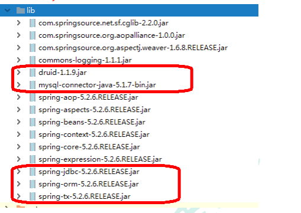
（2）在 spring 配置文件配置数据库连接池
1 2 3 4 5 6 7 8 <bean id ="dataSource" class ="com.alibaba.druid.pool.DruidDataSource" destroy-method ="close" > <property name ="url" value ="jdbc:mysql:///user_db" /> <property name ="username" value ="root" /> <property name ="password" value ="root" /> <property name ="driverClassName" value ="com.mysql.jdbc.Driver" /> </bean >
（3）配置 JdbcTemplate 对象，注入 DataSource
1 2 3 4 5 <bean id ="jdbcTemplate" class ="org.springframework.jdbc.core.JdbcTemplate" > <property name ="dataSource" ref ="dataSource" > </property > </bean >
（4）创建 service 类，创建 dao 类，在 dao 注入 jdbcTemplate 对象
1 2 <context:component-scan base-package ="com.atguigu" > </context:component-scan >
1 2 3 4 5 6 @Service public class BookService { @Autowired private BookDao bookDao; }
1 2 3 4 5 6 7 @Repository public class BookDaoImpl implements BookDao { @Autowired private JdbcTemplate jdbcTemplate; }
JdbcTemplate 操作数据库（添加） 1、对应数据库创建实体类
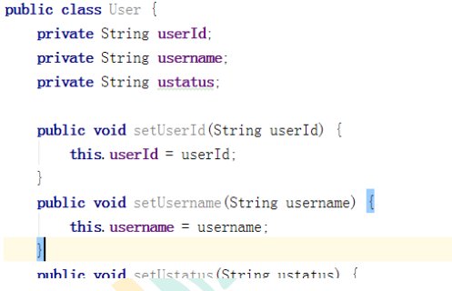
2、编写 service 和 dao
（1）在 dao 进行数据库添加操作
（2）调用 JdbcTemplate 对象里面 update 方法实现添加操作
有两个参数
第一个参数：sql 语句
第二个参数：可变参数，设置 sql 语句值
1 2 3 4 5 6 7 8 9 10 11 12 13 14 15 16 17 @Repository public class BookDaoImpl implements BookDao { @Autowired private JdbcTemplate jdbcTemplate; @Override public void add (Book book) { String sql = "insert into t_book values(?,?,?)" ; Object[] args = {book.getUserId(), book.getUsername(), book.getUstatus()}; int update = jdbcTemplate.update(sql,args); System.out.println(update); } }
3、测试类
1 2 3 4 5 6 7 8 9 10 11 12 @Test public void testJdbcTemplate () { ApplicationContext context = new ClassPathXmlApplicationContext ("bean1.xml" ); BookService bookService = context.getBean("bookService" , BookService.class); Book book = new Book (); book.setUserId("1" ); book.setUsername("java" ); book.setUstatus("a" ); bookService.addBook(book); }
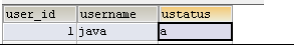
JdbcTemplate 操作数据库（修改和删除） 1、修改
1 2 3 4 5 6 7 @Override public void updateBook (Book book) { String sql = "update t_book set username=?,ustatus=? where user_id=?" ; Object[] args = {book.getUsername(), book.getUstatus(),book.getUserId()}; int update = jdbcTemplate.update(sql, args); System.out.println(update); }
2、删除
1 2 3 4 5 6 7 @Override public void delete (String id) { String sql = "delete from t_book where user_id=?" ; int update = jdbcTemplate.update(sql, id); System.out.println(update); }
JdbcTemplate 操作数据库（查询返回某个值） 1、查询表里面有多少条记录，返回是某个值
2、使用 JdbcTemplate 实现查询返回某个值代码
有两个参数
第一个参数：sql 语句
第二个参数：返回类型 Class
1 2 3 4 5 6 7 @Override public int selectCount () { String sql = "select count(*) from t_book" ; Integer count = jdbcTemplate.queryForObject(sql, Integer.class); return count; }
JdbcTemplate 操作数据库（查询返回对象） 1、场景：查询图书详情
2、JdbcTemplate 实现查询返回对象
1 2 3 4 5 6 7 8 9 @Override public Book findBookInfo (String id) { String sql = "select * from t_book where user_id=?" ; Book book = jdbcTemplate.queryForObject(sql, new BeanPropertyRowMapper <Book>(Book.class), id); return book; }
JdbcTemplate 操作数据库（查询返回集合） 1、场景：查询图书列表分页…
2、调用 JdbcTemplate 方法实现查询返回集合
有三个参数
第一个参数：sql 语句
第二个参数：RowMapper 是接口，针对返回不同类型数据，使用这个接口里面实现类完成 数据封装
第三个参数：sql 语句值
1 2 3 4 5 6 7 8 9 @Override public List<Book> findAllBook () { String sql = "select * from t_book" ; List<Book> bookList = jdbcTemplate.query(sql, new BeanPropertyRowMapper <Book>(Book.class)); return bookList; }
JdbcTemplate 操作数据库（批量操作） 1、批量操作：操作表里面多条记录
2、JdbcTemplate 实现批量添加操作
有两个参数
第一个参数：sql 语句
第二个参数：List 集合，添加多条记录数据
1 2 3 4 5 6 7 8 @Override public void batchAddBook (List<Object[]> batchArgs) { String sql = "insert into t_book values(?,?,?)" ; int [] ints = jdbcTemplate.batchUpdate(sql, batchArgs); System.out.println(Arrays.toString(ints)); }
1 2 3 4 5 6 7 8 9 10 List<Object[]> batchArgs = new ArrayList <>(); Object[] o1 = {"3" ,"java" ,"a" }; Object[] o2 = {"4" ,"c++" ,"b" }; Object[] o3 = {"5" ,"MySQL" ,"c" }; batchArgs.add(o1); batchArgs.add(o2); batchArgs.add(o3); bookService.batchAdd(batchArgs);
3、JdbcTemplate 实现批量修改操作
1 2 3 4 5 6 7 @Override public void batchUpdateBook (List<Object[]> batchArgs) { String sql = "update t_book set username=?,ustatus=? where user_id=?" ; int [] ints = jdbcTemplate.batchUpdate(sql, batchArgs); System.out.println(Arrays.toString(ints)); }
1 2 3 4 5 6 7 8 9 10 List<Object[]> batchArgs = new ArrayList <>(); Object[] o1 = {"java0909" ,"a3" ,"3" }; Object[] o2 = {"c++1010" ,"b4" ,"4" }; Object[] o3 = {"MySQL1111" ,"c5" ,"5" }; batchArgs.add(o1); batchArgs.add(o2); batchArgs.add(o3); bookService.batchUpdate(batchArgs);
4、JdbcTemplate 实现批量删除操作
1 2 3 4 5 6 7 8 @Override public void batchDeleteBook (List<Object[]> batchArgs) { String sql = "delete from t_book where user_id=?" ; int [] ints = jdbcTemplate.batchUpdate(sql, batchArgs); System.out.println(Arrays.toString(ints)); }
1 2 3 4 5 6 7 8 List<Object[]> batchArgs = new ArrayList <>(); Object[] o1 = {"3" }; Object[] o2 = {"4" }; batchArgs.add(o1); batchArgs.add(o2); bookService.batchDelete(batchArgs);
五、事务管理 事务操作（事务概念） 1、什么事务
（1）事务是数据库操作最基本单元，逻辑上一组操作，要么都成功，如果有一个失败所有操 作都失败
（2）典型场景：银行转账
lucy 转账 100 元 给 mary
lucy 少 100，mary 多 100
2、事务四个特性（ACID）
（1）原子性
（2）一致性
（3）隔离性
（4）持久性
事务操作（搭建事务操作环境） 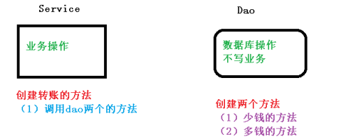
1、创建数据库表，添加记录
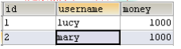
2、创建 service，搭建 dao，完成对象创建和注入关系
（1）service 注入 dao，在 dao 注入 JdbcTemplate，在 JdbcTemplate 注入 DataSource
1 2 3 4 5 6 @Service public class UserService { @Autowired private UserDao userDao; }
1 2 3 4 5 @Repository public class UserDaoImpl implements UserDao { @Autowired private JdbcTemplate jdbcTemplate; }
3、在 dao 创建两个方法：多钱和少钱的方法，在 service 创建方法（转账的方法）
1 2 3 4 5 6 7 8 9 10 11 12 13 14 15 16 17 18 @Repository public class UserDaoImpl implements UserDao { @Autowired private JdbcTemplate jdbcTemplate; @Override public void reduceMoney () { String sql = "update t_account set money=money-? where username=?" ; jdbcTemplate.update(sql,100 ,"lucy" ); } @Override public void addMoney () { String sql = "update t_account set money=money+? where username=?" ; jdbcTemplate.update(sql,100 ,"mary" ); } }
1 2 3 4 5 6 7 8 9 10 11 12 13 14 @Service public class UserService { @Autowired private UserDao userDao; public void accountMoney () { userDao.reduceMoney(); userDao.addMoney(); } }
4、上面代码，如果正常执行没有问题的，但是如果代码执行过程中出现异常，有问题
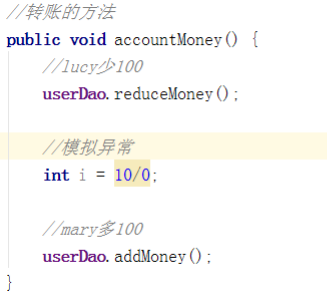
（1）上面问题如何解决呢？
（2）事务操作过程
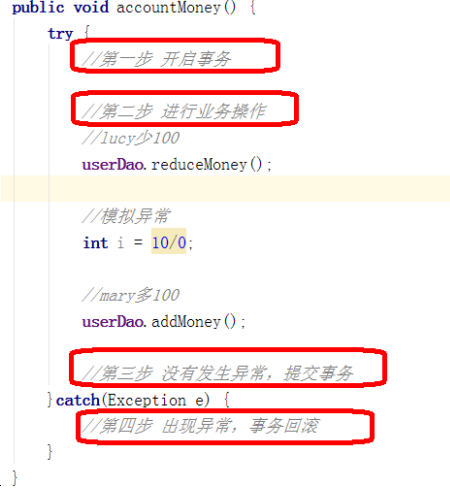
事务操作（Spring 事务管理介绍） 1、事务添加到 JavaEE 三层结构里面 Service 层（业务逻辑层）
2、在 Spring 进行事务管理操作 （1）有两种方式：编程式事务管理和声明式事务管理（使用）
3、声明式事务管理
（1）基于注解方式（使用）
（2）基于 xml 配置文件方式
4、在 Spring 进行声明式事务管理，底层使用 AOP 原理
5、Spring 事务管理 API
（1）提供一个接口，代表事务管理器，这个接口针对不同的框架提供不同的实现类
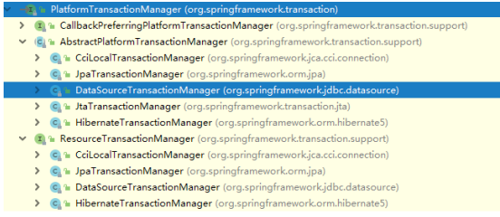
事务操作（注解声明式事务管理） 1、在 spring 配置文件配置事务管理器
1 2 3 4 5 6 <bean id ="transactionManager" class ="org.springframework.jdbc.datasource.DataSourceTransactionManager" > <property name ="dataSource" ref ="dataSource" > </property > </bean >
2、在 spring 配置文件，开启事务注解
（1）在 spring 配置文件引入名称空间 tx
1 2 3 4 5 6 7 8 9 10 11 12 13 14 <beans xmlns ="http://www.springframework.org/schema/beans" xmlns:xsi ="http://www.w3.org/2001/XMLSchema-instance" xmlns:context ="http://www.springframework.org/schema/context" xmlns:aop ="http://www.springframework.org/schema/aop" xmlns:tx ="http://www.springframework.org/schema/tx" xsi:schemaLocation ="http://www.springframework.org/schema/beans http://www.springframework.org/schema/beans/spring-beans.xsd http://www.springframework.org/schema/context http://www.springframework.org/schema/context/spring-context.xsd http://www.springframework.org/schema/aop http://www.springframework.org/schema/aop/spring-aop.xsd http://www.springframework.org/schema/tx http://www.springframework.org/schema/tx/spring-tx.xsd" >
（2）开启事务注解
1 2 <tx:annotation-driven transactionmanager ="transactionManager" > </tx:annotation-driven >
3、在 service 类上面（或者 service 类里面方法上面）添加事务注解
（1）@Transactional，这个注解添加到类上面，也可以添加方法上面
（2）如果把这个注解添加类上面，这个类里面所有的方法都添加事务
（3）如果把这个注解添加方法上面，为这个方法添加事务
1 2 3 4 @Service @Transactional public class UserService {}
事务操作（声明式事务管理参数配置） 1、在 service 类上面添加注解@Transactional，在这个注解里面可以配置事务相关参数
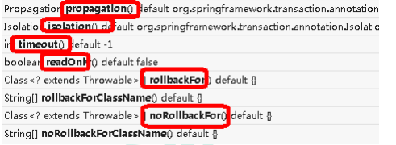
2、propagation：事务传播行为
（1）多事务方法直接进行调用，这个过程中事务 是如何进行管理的
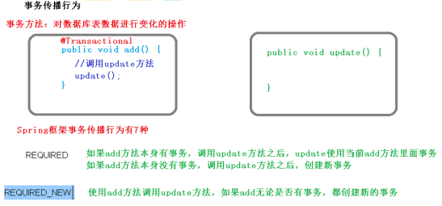
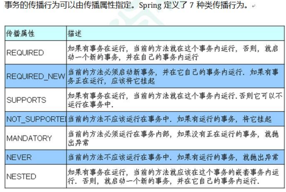
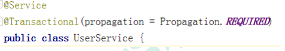
3、ioslation：事务隔离级别
（1）事务有特性成为隔离性，多事务操作之间不会产生影响。不考虑隔离性产生很多问题
（2）有三个读问题：脏读、不可重复读、虚（幻）读
（3）==脏读：==一个未提交事务读取到另一个未提交事务的数据
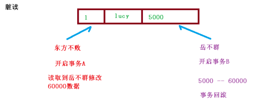
（4）==不可重复读：==一个未提交事务读取到另一提交事务修改数据
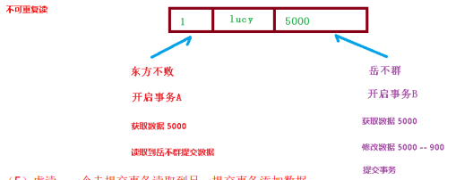
（5）==虚读：==一个未提交事务读取到另一提交事务添加数据
（6）解决：通过设置事务隔离级别，解决读问题
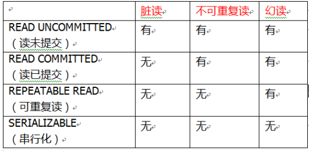
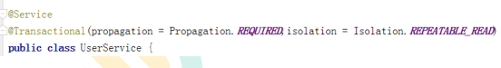
4、timeout：超时时间
（1）事务需要在一定时间内进行提交，如果不提交进行回滚
（2）默认值是 -1 ，设置时间以秒单位进行计算
5、readOnly：是否只读
（1）读：查询操作，写：添加修改删除操作
（2）readOnly 默认值 false，表示可以查询，可以添加修改删除操作
（3）设置 readOnly 值是 true，设置成 true 之后，只能查询
6、rollbackFor：回滚
（1）设置出现哪些异常进行事务回滚
7、noRollbackFor：不回滚
（1）设置出现哪些异常不进行事务回滚
事务操作（XML 声明式事务管理） 1、在 spring 配置文件中进行配置
第一步 配置事务管理器
第二步 配置通知
第三步 配置切入点和切面
1 2 3 4 5 6 7 8 9 10 11 12 13 14 15 16 17 18 19 20 21 22 23 <bean id ="transactionManager" class ="org.springframework.jdbc.datasource.DataSourceTransactionManager" > <property name ="dataSource" ref ="dataSource" > </property > </bean > <tx:advice id ="txadvice" > <tx:attributes > <tx:method name ="accountMoney" propagation ="REQUIRED" /> </tx:attributes > </tx:advice > <aop:config > <aop:pointcut id ="pt" expression ="execution(* com.atguigu.spring5.service.UserService.*(..))" /> <aop:advisor advice-ref ="txadvice" pointcut-ref ="pt" /> </aop:config >
==事务操作（完全注解声明式事务管理）== 1、创建配置类，使用配置类替代 xml 配置文件
1 2 3 4 5 6 7 8 9 10 11 12 13 14 15 16 17 18 19 20 21 22 23 24 25 26 27 28 29 30 31 32 33 @Configuration @ComponentScan(basePackages = "com.atguigu") @EnableTransactionManagement public class TxConfig { @Bean public DruidDataSource getDruidDataSource () { DruidDataSource dataSource = new DruidDataSource (); dataSource.setDriverClassName("com.mysql.jdbc.Driver" ); dataSource.setUrl("jdbc:mysql:///user_db" ); dataSource.setUsername("root" ); dataSource.setPassword("root" ); return dataSource; } @Bean public JdbcTemplate getJdbcTemplate (DataSource dataSource) { JdbcTemplate jdbcTemplate = new JdbcTemplate (); jdbcTemplate.setDataSource(dataSource); return jdbcTemplate; } @Bean public DataSourceTransactionManager getDataSourceTransactionManager (DataSource dataSource) { DataSourceTransactionManager transactionManager = new DataSourceTransactionManager (); transactionManager.setDataSource(dataSource); return transactionManager; } }
六、spring新特性 Spring5 框架新功能 1、整个 Spring5 框架的代码基于 Java8，运行时兼容 JDK9，许多不建议使用的类和方 法在代码库中删除
2、Spring 5.0 框架自带了通用的日志封装
（1）Spring5 已经移除 Log4jConfigListener，官方建议使用 Log4j2
（2）Spring5 框架整合 Log4j2
第一步 引入 jar 包(maven项目在pom.xml引入依赖)
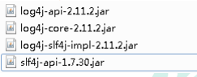
第二步 创建 log4j2.xml 配置文件
1 2 3 4 5 6 7 8 9 10 11 12 13 14 15 16 17 18 19 20 21 22 23 24 <?xml version="1.0" encoding="UTF-8" ?> <configuration status ="INFO" > <appenders > <console name ="Console" target ="SYSTEM_OUT" > <PatternLayout pattern ="%d{yyyy-MM-dd HH:mm:ss.SSS} [%t] %- 5level %logger{36} - %msg%n" /> </console > </appenders > <loggers > <root level ="info" > <appender-ref ref ="Console" /> </root > </loggers > </configuration >
3、Spring5 框架核心容器支持@Nullable 注解
（1）@Nullable 注解可以使用在方法上面，属性上面，参数上面，表示方法返回可以为空，属性值可以 为空，参数值可以为空
（2）注解用在方法上面，方法返回值可以为空
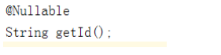
（3）注解使用在方法参数里面，方法参数可以为空
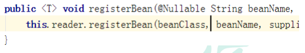
（4）注解使用在属性上面，属性值可以为空
4、Spring5 核心容器支持函数式风格 GenericApplicationContext
1 2 3 4 5 6 7 8 9 10 11 12 13 @Test public void testGenericApplicationContext () { GenericApplicationContext context = new GenericApplicationContext (); context.refresh(); context.registerBean("user1" ,User.class,() -> new User ()); User user = (User)context.getBean("user1" ); System.out.println(user); }
5、Spring5 支持整合 JUnit5
（1）整合 JUnit4
第一步 引入 Spring 相关针对测试依赖
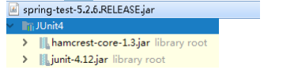
第二步 创建测试类，使用注解方式完成
1 2 3 4 5 6 7 8 9 10 @RunWith(SpringJUnit4ClassRunner.class) @ContextConfiguration("classpath:bean1.xml") public class JTest4 { @Autowired private UserService userService; @Test public void test1 () { userService.accountMoney(); } }
（2）Spring5 整合 JUnit5
第一步 引入 JUnit5 的 jar 包
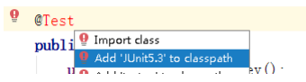
第二步 创建测试类，使用注解完成
1 2 3 4 5 6 7 8 9 10 @ExtendWith(SpringExtension.class) @ContextConfiguration("classpath:bean1.xml") public class JTest5 { @Autowired private UserService userService; @Test public void test1 () { userService.accountMoney(); } }
（3）使用一个复合注解替代上面两个注解完成整合
1 2 3 4 5 6 7 8 9 @SpringJUnitConfig(locations = "classpath:bean1.xml") public class JTest5 { @Autowired private UserService userService; @Test public void test1 () { userService.accountMoney(); } }
Spring5 框架新功能（Webflux） 1、SpringWebflux 介绍
（1）是 Spring5 添加新的模块，用于 web 开发的，功能和 SpringMVC 类似的，Webflux 使用 当前一种比较流程响应式编程出现的框架。
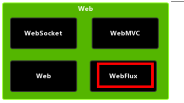
（2）使用传统 web 框架，比如 SpringMVC，这些基于 Servlet 容器，Webflux 是一种异步非阻 塞的框架，异步非阻塞的框架在 Servlet3.1 以后才支持，核心是基于 Reactor 的相关 API 实现 的。
（3）解释什么是异步非阻塞
** 上面都是针对对象不一样
**异步和同步针对调用者，**调用者发送请求，如果等着对方回应之后才去做其他事情就是同 步，如果发送请求之后不等着对方回应就去做其他事情就是异步
**阻塞和非阻塞针对被调用者，**被调用者受到请求之后，做完请求任务之后才给出反馈就是阻 塞，受到请求之后马上给出反馈然后再去做事情就是非阻塞
（4）Webflux 特点：
第一 非阻塞式：在有限资源下，提高系统吞吐量和伸缩性，以 Reactor 为基础实现响应式编程
第二 函数式编程：Spring5 框架基于 java8，Webflux 使用 Java8 函数式编程方式实现路由请求
（5）比较 SpringMVC
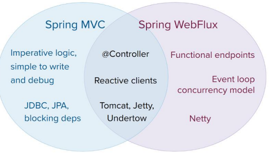
第一 两个框架都可以使用注解方式，都运行在 Tomet 等容器中
第二 SpringMVC 采用命令式编程，Webflux 采用异步响应式编程
2、响应式编程（Java 实现）
（1）什么是响应式编程
响应式编程是一种面向数据流和变化传播的编程范式。这意味着可以在编程语言中很方便 地表达静态或动态的数据流，而相关的计算模型会自动将变化的值通过数据流进行传播。 电子表格程序就是响应式编程的一个例子。单元格可以包含字面值或类似”=B1+C1”的公 式，而包含公式的单元格的值会依据其他单元格的值的变化而变化。
（2）Java8 及其之前版本
提供的观察者模式两个类 Observer 和 Observable
1 2 3 4 5 6 7 8 9 10 11 12 13 14 15 public class ObserverDemo extends Observable { public static void main (String[] args) { ObserverDemo observer = new ObserverDemo (); observer.addObserver((o,arg)->{ System.out.println("发生变化" ); }); observer.addObserver((o,arg)->{ System.out.println("手动被观察者通知，准备改变" ); }); observer.setChanged(); observer.notifyObservers(); } }
3、响应式编程（Reactor 实现）
（1）响应式编程操作中，Reactor 是满足 Reactive 规范框架
（2）Reactor 有两个核心类，Mono 和 Flux，这两个类实现接口 Publisher，提供丰富操作 符。Flux 对象实现发布者，返回 N 个元素；Mono 实现发布者，返回 0 或者 1 个元素
（3）Flux 和 Mono 都是数据流的发布者，使用 Flux 和 Mono 都可以发出三种数据信号： 元素值，错误信号，完成信号，错误信号和完成信号都代表终止信号，终止信号用于告诉 订阅者数据流结束了，错误信号终止数据流同时把错误信息传递给订阅者
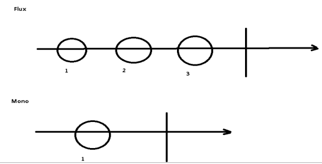
（4）代码演示 Flux 和 Mono
第一步 引入依赖
1 2 3 4 5 <dependency > <groupId > io.projectreactor</groupId > <artifactId > reactor-core</artifactId > <version > 3.1.5.RELEASE</version > </dependency >
第二步 编程代码
1 2 3 4 5 6 7 8 9 10 11 12 13 public static void main (String[] args) { Flux.just(1 ,2 ,3 ,4 ); Mono.just(1 ); Integer[] array = {1 ,2 ,3 ,4 }; Flux.fromArray(array); List<Integer> list = Arrays.asList(array); Flux.fromIterable(list); Stream<Integer> stream = list.stream(); Flux.fromStream(stream); }
（5）三种信号特点
错误信号和完成信号都是终止信号，不能共存的
如果没有发送任何元素值，而是直接发送错误或者完成信号，表示是空数据流
如果没有错误信号，没有完成信号，表示是无限数据流
（6）调用 just 或者其他方法只是声明数据流，数据流并没有发出，只有进行订阅之后才会触 发数据流，不订阅什么都不会发生的
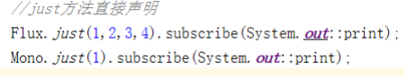
（7）操作符
4、SpringWebflux 执行流程和核心 API
SpringWebflux 基于 Reactor，默认使用容器是 Netty，Netty 是高性能的 NIO 框架，异步非阻 塞的框架
（1）Netty
（2）SpringWebflux 执行过程和 SpringMVC 相似的
SpringWebflux 核心控制器 DispatchHandler，实现接口 WebHandler
接口 WebHandler 有一个方法
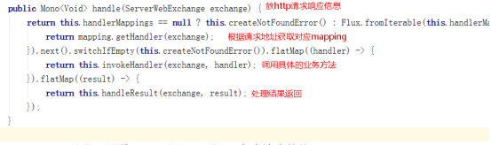
（3）SpringWebflux 里面 DispatcherHandler，负责请求的处理
HandlerMapping：请求查询到处理的方法
HandlerAdapter：真正负责请求处理
HandlerResultHandler：响应结果处理
（4）SpringWebflux 实现函数式编程，两个接口：RouterFunction（路由处理） 和 HandlerFunction（处理函数）
5、==SpringWebflux（基于注解编程模型）== SpringWebflux 实现方式有两种：注解编程模型和函数式编程模型
使用注解编程模型方式，和之前 SpringMVC 使用相似的，只需要把相关依赖配置到项目中， SpringBoot 自动配置相关运行容器，默认情况下使用 Netty 服务器
第一步 创建 SpringBoot 工程，引入 Webflux 依赖
第二步 配置启动端口号
第三步 创建包和相关类
1 2 3 4 5 6 7 8 9 public interface UserService { Mono<User> getUserById (int id) ; Flux<User> getAllUser () ; Mono<Void> saveUserInfo (Mono<User> user) ; }
1 2 3 4 5 6 7 8 9 10 11 12 13 14 15 16 17 18 19 20 21 22 23 24 25 26 27 28 public class UserServiceImpl implements UserService { private final Map<Integer,User> users = new HashMap <>(); public UserServiceImpl () { this .users.put(1 ,new User ("lucy" ,"nan" ,20 )); this .users.put(2 ,new User ("mary" ,"nv" ,30 )); this .users.put(3 ,new User ("jack" ,"nv" ,50 )); } @Override public Mono<User> getUserById (int id) { return Mono.justOrEmpty(this .users.get(id)); } @Override public Flux<User> getAllUser () { return Flux.fromIterable(this .users.values()); } @Override public Mono<Void> saveUserInfo (Mono<User> userMono) { return userMono.doOnNext(person -> { int id = users.size()+1 ; users.put(id,person); }).thenEmpty(Mono.empty()); } }
1 2 3 4 5 6 7 8 9 10 11 12 13 14 15 16 17 18 19 20 21 public class UserController { @Autowired private UserService userService; @GetMapping("/user/{id}") public Mono<User> geetUserId (@PathVariable int id) { return userService.getUserById(id); } @GetMapping("/user") public Flux<User> getUsers () { return userService.getAllUser(); } @PostMapping("/saveuser") public Mono<Void> saveUser (@RequestBody User user) { Mono<User> userMono = Mono.just(user); return userService.saveUserInfo(userMono); } }
SpringMVC 方式实现，同步阻塞的方式，基于 SpringMVC+Servlet+Tomcat
SpringWebflux 方式实现，异步非阻塞 方式，基于 SpringWebflux+Reactor+Netty
6、SpringWebflux（基于函数式编程模型）
（1）在使用函数式编程模型操作时候，需要自己初始化服务器
（2）基于函数式编程模型时候，有两个核心接口：RouterFunction（实现路由功能，请求转发 给对应的 handler）和 HandlerFunction（处理请求生成响应的函数）。核心任务定义两个函数 式接口的实现并且启动需要的服务器。
（ 3 ） SpringWebflux 请 求 和 响 应 不 再 是 ServletRequest 和 ServletResponse ，而是 ServerRequest 和 ServerResponse
第一步 把注解编程模型工程复制一份 ，保留 entity 和 service 内容
第二步 创建 Handler（具体实现方法）
1 2 3 4 5 public class UserHandler { private final UserService userService; public UserHandler (UserService userService) { this .userService = userService; }
1 2 3 4 5 6 7 8 9 10 11 12 13 14 15 16 17 18 19 20 21 22 23 24 25 26 27 28 29 30 31 32 33 public Mono<ServerResponse> getUserById (ServerRequest request) { int userId = Integer.valueOf(request.pathVariable("id" )); Mono<ServerResponse> notFound = ServerResponse.notFound().build(); Mono<User> userMono = this .userService.getUserById(userId); return userMono .flatMap(person -> ServerResponse.ok().contentType(MediaType.APPLICATION_JSON) .body(fromObject(person))) .switchIfEmpty(notFound); } public Mono<ServerResponse> getAllUsers () { Flux<User> users = this .userService.getAllUser(); return ServerResponse.ok().contentType(MediaType.APPLICATION_JSON).body(users,User.cl ass); } public Mono<ServerResponse> saveUser (ServerRequest request) { Mono<User> userMono = request.bodyToMono(User.class); return ServerResponse.ok().build(this .userService.saveUserInfo(userMono)); } }
第三步 初始化服务器，编写 Router
创建路由的方法
1 2 3 4 5 6 7 8 9 10 11 12 public RouterFunction<ServerResponse> routingFunction () { UserService userService = new UserServiceImpl (); UserHandler handler = new UserHandler (userService); return RouterFunctions.route( GET("/users/{id}" ).and(accept(APPLICATION_JSON)),handler::getUserById) .andRoute(GET("/users" ).and(accept(APPLICATION_JSON)),handler::get AllUsers); }
创建服务器完成适配
1 2 3 4 5 6 7 8 9 10 11 public void createReactorServer () { RouterFunction<ServerResponse> route = routingFunction(); HttpHandler httpHandler = toHttpHandler(route); ReactorHttpHandlerAdapter adapter = new ReactorHttpHandlerAdapter (httpHandler); HttpServer httpServer = HttpServer.create(); httpServer.handle(adapter).bindNow(); }
1 2 3 4 5 6 public static void main (String[] args) throws Exception{ Server server = new Server (); server.createReactorServer(); System.out.println("enter to exit" ); System.in.read(); }
（4）使用 WebClient 调用
1 2 3 4 5 6 7 8 9 10 11 12 13 14 15 16 17 18 19 public class Client { public static void main (String[] args) { WebClient webClient = WebClient.create("http://127.0.0.1:5794" ); String id = "1" ; User userresult = webClient.get().uri("/users/{id}" , id) .accept(MediaType.APPLICATION_JSON).retrieve().bodyToMono(User .class) .block(); System.out.println(userresult.getName()); Flux<User> results = webClient.get().uri("/users" ) .accept(MediaType.APPLICATION_JSON).retrieve().bodyToFlux(User .class); results.map(stu -> stu.getName()) .buffer().doOnNext(System.out::println).blockFirst(); } }
七、总结 1、Spring 框架概述
（1）轻量级开源 JavaEE 框架，为了解决企业复杂性，两个核心组成：IOC 和 AOP
（2）Spring5.2.6 版本
2、IOC 容器
（1）IOC 底层原理（工厂、反射等）
（2）IOC 接口（BeanFactory）
（3）IOC 操作 Bean 管理（基于 xml）
（4）IOC 操作 Bean 管理（基于注解）
3、Aop
（1）AOP 底层原理：动态代理，有接口（JDK 动态代理），没有接口（CGLIB 动态代理）
（2）术语：切入点、增强（通知）、切面
（3）基于 AspectJ 实现 AOP 操作
4、JdbcTemplate
（1）使用 JdbcTemplate 实现数据库 curd 操作
（2）使用 JdbcTemplate 实现数据库批量操作
5、事务管理
（1）事务概念
（2）重要概念（传播行为和隔离级别）
（3）基于注解实现声明式事务管理
（4）完全注解方式实现声明式事务管理
6、Spring5 新功能
（1）整合日志框架
（2）@Nullable 注解
（3）函数式注册对象
（4）整合 JUnit5 单元测试框架
（5）SpringWebflux 使用